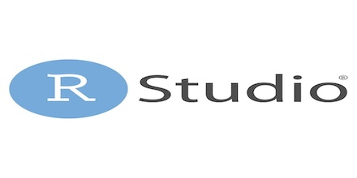

All About the Basics: R and Rstudio
R is a powerful open-source programming language designed for statistical analysis and data visualization. RStudio is an integrated development environment (IDE) that makes working with R much easier. Learn how to download and getting familiar with R and Rstudio
R . Rstudio . Intro
Oct 8, 2025